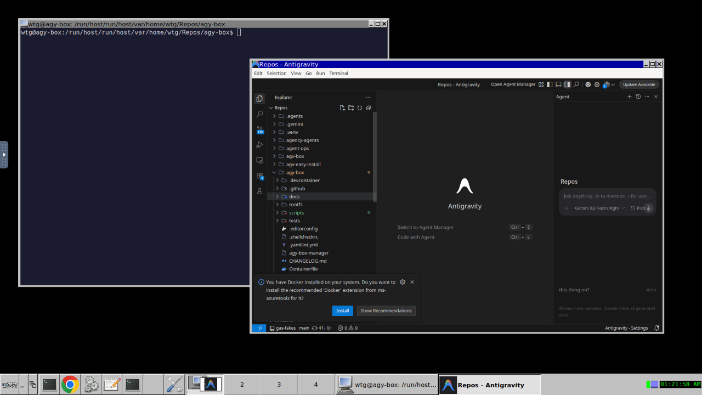
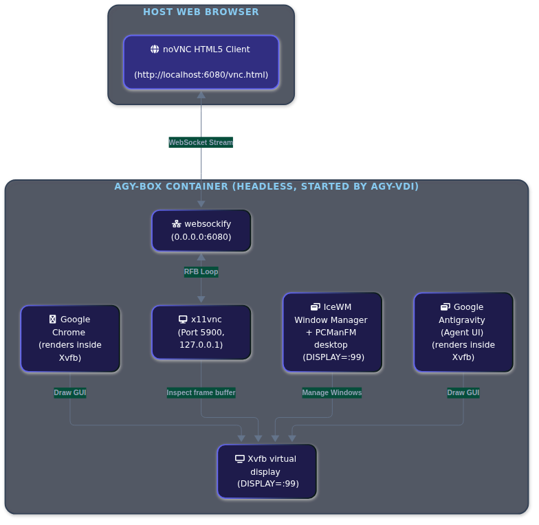

Antigravity Dev Box
Interactive User Guide & Container Architecture
v0.6.0 · by wtg-codes



Quick Start (Zero-to-Hero in 60s)
No repository cloning required — launch directly from your host shell
Run this single command on your Linux or macOS host terminal to bootstrap the environment:
bash -c "$(curl -fsSL https://raw.githubusercontent.com/wtg-codes/agy-box/main/agy-box-manager)"agy-box-manager and agy directly to your host's ~/.local/bin.
Before You Start
Universal Blue / Bluefin / Aurora Users
gum:
brew install gumThe 4 Ways to Work
Flexible developer workflows adapted to any host environment
Whether you are developing on a multi-monitor Linux desktop, a headless cloud VM, an iPad in a browser, or a plain SSH terminal, agy-box supports four distinct operational paths:
(Wayland / X11 GUI)"] A --> C["Way 2: Web VDI Desktop
(localhost:6080 noVNC)"] A --> D["Way 3: Modern IDEs
(VS Code, Zed, JetBrains)"] A --> E["Way 4: Terminal Shim
(Direct host ~/.local/bin/agy)"] classDef default fill:#1e293b,stroke:#4f46e5,stroke-width:1.5px,color:#e2e8f0; classDef highlight fill:#312e81,stroke:#6366f1,stroke-width:2px,color:#ffffff; class A highlight;
Native Host Window Integration
Best for desktop Linux (Fedora, Ubuntu, Arch, Bluefin). Graphical applications (`antigravity`, `code`, `google-chrome`) render seamlessly on your host desktop via Wayland/X11 socket forwarding with GPU acceleration and shared clipboard.
Browser-Based Web VDI Desktop
Perfect for headless servers, remote cloud instances, ChromeOS, or iPads. Launches an ultra-responsive IceWM desktop accessible from any browser at http://localhost:6080 with no local dependencies.
Modern IDE Integration
Code directly inside the container with your editor of choice. Visual Studio Code and Zed are pre-baked with Antigravity extensions; JetBrains IDEs are installable on-demand via agy-install-ide.
Pure Terminal Workflow & Host Shim
You don't need to manually enter the container. `agy-box-manager` exports a lightweight shim to ~/.local/bin/agy so you can invoke agents directly from your normal host shell.
Modern IDE Deep Dive
Pre-baked and on-demand editor integrations with Antigravity plugins
Visual Studio Code (Pre-Baked)
Bake in Box
Installed directly from Microsoft's official APT repository (packages.microsoft.com) for both amd64 and arm64.
- Container Wrapper: Wrapped with unprivileged container safety flags (
--disable-dev-shm-usage --no-sandbox) for flawless rendering. - Antigravity Extension: Pre-installed automatically via
Google.antigravity. - Desktop Shortcut: Pre-configured icon on the IceWM VDI desktop.
code /path/to/project
Launch from container terminal or desktop
| Editor | Packaging | Startup | Antigravity Extension | Launch Command |
|---|---|---|---|---|
| VS Code | Microsoft APT repo | Fast | Pre-installed | code . |
| Zed Editor | Native binary | Instant (Rust) | Auto-configured | zed . |
| Antigravity IDE | Google standalone | Fast | Built-in | antigravity-ide . |
| JetBrains | On-demand installer | Moderate (JVM) | Auto-registered | agy-install-ide |
AI Model Authentication & Setup
Support for all Google AI authentication methods and 100% offline local LLMs
Fastest way to get started with generous free-tier model access. Simply run agy inside the box and complete the one-time browser login.
Direct Gemini API access. Set in your environment or add to ~/.config/environment.d/agy-box.conf:
Authenticate using Google Cloud Application Default Credentials for enterprise projects:
100% private, zero internet telemetry. Runs bundled Open WebUI inside the box connected to host Ollama on port 11434.
What's In The Box?
Home Isolation
Isolated $HOME directory — your host profile stays untouched. Changes in the box stay in the box.
GUI Forwarding
X11/Wayland socket forwarding with GPU passthrough. Graphical apps render natively on your host desktop.
Keyring Forwarding
D-Bus session bus forwarded from host. GNOME Keyring credentials accessible inside the container.
VDI Web Desktop
noVNC HTML5 virtual desktop for headless servers. Full IceWM desktop accessible from any browser.
Security Audits
Automated privilege boundary checks, port binding scans, and file permission hardening on first launch.
Profile Seeding
One-time copy of Chrome, Antigravity, and IDE settings from your host. Seed once, diverge forever.
Local Web Dashboard
Open WebUI (CPU-only PyTorch) for your local Ollama models. Launch with just agy-local-ui.
Cloud-Native Tooling
Pinned, checksum-verified kubectl, helm, and k9s, plus Google ADK and Gemini CLI.
The Antigravity Suite
Four integrated products, one container — the complete AI agent development environment:
Google Antigravity (Agent UI)
Agent-first experience with canvas workspace, integrated terminal, course labs, and Gemini-powered AI assistant. The flagship product for agentic development.
Antigravity IDE
VS Code-based classic developer environment with Antigravity extensions pre-loaded. For those who prefer a traditional IDE workflow.
Antigravity CLI (agy)
Command-line utility for lab management, submission, and agent status monitoring. Communicates with Agent UI via WebSocket.
Antigravity SDK (Python)
Python package for programmatic agent orchestration. API calls to local Agent UI on Port 8080 with Google Cloud auth via ADC.
Architecture & Topologies
Layered Architecture — Host Integration Bridge

Product Communication — The Antigravity Suite

VDI Web Desktop
For remote VMs, headless environments, or those who prefer a standalone GUI window. Full IceWM desktop with PCManFM, served over noVNC in your browser.

agy-box-manager desktop1920×1080
Default resolution
LAN Access
Auto-detected IP
Auto-Scaling
Fits your browser
Access at http://localhost:6080/vnc.html?autoconnect=true&resize=scale
First-Time Setup Assistant
On first launch, agy-setup-helper walks you through automated environment checks:
Optionally seed your container with Chrome bookmarks, cookies, and Antigravity settings from your host. One-time copy — changes in the box never affect the host.
Agentic Engineering & CLI Mastery
Autonomous workflows, slash commands, and background subagents
| Command / Flag | Purpose & Description |
|---|---|
| agy | Start an interactive agent terminal chat session |
| agy -p "prompt" | Run a one-shot headless agent prompt and print the response to stdout |
| agy --resume | Resume the most recent conversation and restore context |
| agy --statusline | Customize the interactive terminal status line and active agent display |
| agy --sandbox | Run in read-only sandbox mode (prevents file writes during exploration) |
Slash Commands Guide (Interactive Session)
Formulates a multi-phase implementation plan before touching code. Recommended for complex refactors.
Activates deep multi-perspective reasoning for complex algorithm design and elusive bugs.
Orchestrates a team of autonomous subagents working on parallel modules simultaneously.
Teaches the agent a permanent preference or pattern to store in your project rules.
Directs the agent to work persistently until a long-running, multi-step objective is fulfilled.
Launches autonomous Chrome CDP session on port 9222 to test web applications and take screenshots.
Maintenance, Checking & Updating
Keep your development sandbox, tools, and IDEs healthy and updated
Diagnostics & Health Checks
Run automated assertions on container health, port mappings, and toolchains:
Updating Tools & Packages
Upgrade the Antigravity suite, IDE extensions, or container OS packages:
Settings Backup & Disaster Recovery
Backup your conversation transcripts, subagent brains, custom skills, and IDE configurations in one archive:
# Create timestamped backup archive:
agy-box-manager backup
# Restore settings on any machine:
agy-box-manager restore agy-box-backup-YYYYMMDD-HHMMSS.tar.gzCommand Reference
| Action | Bash Command | Just Recipe |
|---|---|---|
| Interactive Menu | agy-box-manager |
just agy |
| First-Run Setup Wizard | agy-box-manager wizard [--defaults] |
just agy-wizard |
| Inspect Components & Status | agy-box-manager check |
just agy-check |
| Unified Updater (All/Toolchain/IDEs/OS) | agy-box-manager update [--all|--check] |
just agy-update |
| Backup Settings & State | agy-box-manager backup [file] |
just agy-backup |
| Restore Settings from Archive | agy-box-manager restore <file> [-y] |
just agy-restore |
| Install Official | agy-box-manager install |
just agy-install |
| Build Dev Container | agy-box-manager dev |
just agy-box-dev |
| Enter Official Box | agy-box-manager enter |
just agy-enter |
| Enter Dev Box | agy-box-manager enter dev |
just agy-enter-dev |
| Launch VDI Desktop | agy-box-manager desktop |
just agy-desktop |
| Clean Official Box | agy-box-manager clean |
just agy-clean |
| Run Health Tests | agy-box-manager test |
just agy-test |
| Install Globally | agy-box-manager install-global |
just agy-install-global |
| Local Web Dashboard | distrobox enter agy-box -- /opt/... | just agy-local-ui |
Troubleshooting & FAQ
Solutions to common edge cases, permissions, and desktop integration
Q: "Permission Denied" when creating files on the host
Cause: Running the Docker daemon as root without user namespace remapping, causing files to be owned by root.
Solution: Install Podman (sudo dnf install podman or sudo apt install podman). Podman runs completely rootless and maps your host UID 1:1 inside the container. agy-box-manager auto-prioritizes Podman if installed.
Q: GUI applications do not appear on host desktop
Cause: Your Wayland compositor or X11 server is restricting local socket connections from the container.
Solution: Authorize local container connections on your host by running xhost +local:. Alternatively, use Way 2 by running agy-box-manager desktop to view the full desktop inside your browser over noVNC.
Q: How do I force Docker instead of Podman?
agy-box-manager honors the DBX_CONTAINER_MANAGER environment variable. Export it before launching:
export DBX_CONTAINER_MANAGER="docker" agy-box-manager install
Q: How do I completely reset the box without losing personal data?
Run clean followed by install. Your code repositories in ~/ and your isolated container configurations in ~/.config/agy-box/home are completely preserved:
agy-box-manager clean agy-box-manager install
Q: What is Isolated Keyring mode and how do I enable it?
By default, AGY_KEYRING_MODE="host" shares your host D-Bus secret service so you don't need to re-authenticate. If you are on a shared system or prefer air-gapped credentials, set AGY_KEYRING_MODE="isolated" in ~/.config/agy-box/config.env:
# Switch to container-local encrypted file keyring: echo 'AGY_KEYRING_MODE="isolated"' >> ~/.config/agy-box/config.env agy-box-manager check
This stores credentials securely inside an encrypted local keyring at ~/.config/agy-box/home/.config/python_keyring/keyringrc.cfg.
Q: How do I run the setup wizard non-interactively or in CI?
Pass the --defaults flag to generate or populate ~/.config/agy-box/config.env with recommended settings without launching Charm Gum:
agy-box-manager wizard --defaults # or via Justfile: just agy-wizard --defaults
Documentation Library
In-depth Markdown guides and specifications in the repository
Complete User Guide
7-chapter definitive guide covering workflows, auth, subagents, and IDE setups.
Setup & Architecture Reference
Detailed prerequisites, manual installation steps, and host troubleshooting.
Settings Schema Reference
Comprehensive map of all configuration paths, keys, and environment variables.
Deep Architecture Spec
System topology, IPC protocols, and supply-chain hardening blueprints.
CI/CD & Supply Chain Security
View agy-box-manager Source Code